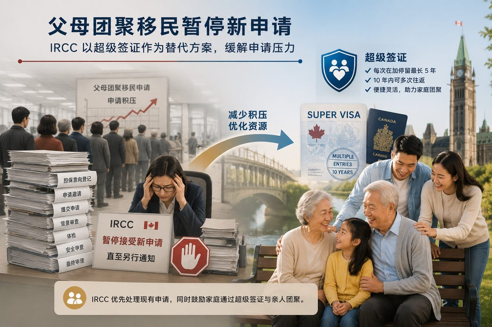

父母团聚何时重启？IRCC宣布PGP暂停接受新申请，释放哪些政策信号？
加拿大移民、难民及公民部（IRCC）于2026年7月15日发布公告，宣布父母及祖父母团聚移民项目（Parents and Grandparents Program，简称PGP）暂停接受新的申请，直至另行通知。
根据IRCC公告，移民局将继续处理现有的父母及祖父母团聚移民申请库存。根据《2026–2028移民水平计划》，预计最多15,000名父母及祖父母将在2026年获得加拿大永久居民身份。
与此同时，IRCC明确表示，在另行通知之前，将不会接受新的Interest to Sponsor（担保意向）登记，也不会发出新的申请邀请（Invitation to Apply）。
15,000人指的是什么？
对于父母团聚移民来说，一份申请通常需要经历以下程序：
- 提交担保意向登记；
- 收到申请邀请；
- 提交完整的担保及永久居民申请；
- 接受资格、体检、安全及背景审查；
- 最终获得加拿大永久居民身份。
因此，《2026–2028移民水平计划》中公布的15,000人，指的是预计在2026年最终获得永久居民身份的人数，也就是admissions，而不是IRCC将在2026年发出的申请邀请数量。
一位担保人通常也可能同时担保父母双方，因此一份PGP申请邀请最终可能对应两位新的加拿大永久居民。
这也说明，在现有申请库存足以支持2026年接纳目标的情况下，IRCC并没有迫切需要开启新一轮邀请。
需要注意：15,000人是永久居民接纳人数，并不代表15,000份新的父母团聚申请邀请。
为什么IRCC现在再次发布公告？
不少申请人看到这则新闻后可能会有一个疑问：2026年原本就没有新的PGP邀请，为什么IRCC现在又要专门发布公告？
事实上，今年早些时候，IRCC已经宣布2026年不会发出新的父母团聚邀请。因此，“2026年没有新一轮抽签”本身并不是最新变化。
真正值得关注的是本次公告中的一句话：
“Until further notice”——直至另行通知。
此前的暂停安排主要针对2026年，意味着当年不会发出新的邀请。
但这一次，IRCC不再给出任何恢复接受新申请或重新发出邀请的时间表。
这意味着暂停措施已经从一个针对单一年度的安排，转变为一项结束时间尚不明确的政策决定。
超级签证被再次强调
对于希望来加拿大长期探亲的父母及祖父母，IRCC再次建议申请超级签证（Super Visa）。
符合资格的申请人可每次在加拿大停留最长五年，并可在签证有效期内多次往返。
超级签证并不提供加拿大永久居民身份，但对于暂时无法通过PGP实现家庭团聚的家庭来说，它仍然是目前较为现实的长期探亲方案。
我们的分析
虽然IRCC并未宣布取消父母及祖父母团聚移民项目，也没有正式公布PGP的结构性改革，但本次公告释放出的政策信号十分明确。
整篇公告反复强调以下政策目标：
- 维持加拿大移民体系的可持续发展；
- 更有效地管理现有申请库存；
- 减少申请积压和审理压力；
- 提高移民系统的整体处理效率；
- 确保移民体系稳定运行。
与此同时，IRCC再次突出超级签证在家庭团聚中的作用。
综合来看，IRCC目前的重点仍然是消化现有申请积压，而不是扩大新的父母担保申请规模。
对于等待下一轮父母团聚抽签的家庭来说，未来真正需要关注的问题已经不再只是：
“2026年有没有邀请？”
而是：
“下一轮邀请究竟什么时候恢复？PGP是否仍会按照目前的模式重新开放？”
对申请人的影响
目前可以确定的是：
- 已经递交的PGP申请将继续审理；
- IRCC不会接受新的担保意向登记；
- 短期内不会发出新的PGP申请邀请；
- 有意接父母来加拿大长期团聚的家庭，可考虑超级签证；
- 申请人应继续关注未来移民水平计划及IRCC政策公告。
这并不代表父母团聚移民项目已经被取消，但在IRCC公布新的安排之前，申请人不应预期短期内会恢复新的担保意向登记或申请邀请。
Canada Suspends New Parents and Grandparents Sponsorship Applications Until Further Notice
Immigration, Refugees and Citizenship Canada (IRCC) announced on July 15, 2026, that it will pause new applications under the Parents and Grandparents Program (PGP) until further notice.
IRCC will continue processing existing PGP applications. Under the 2026–2028 Immigration Levels Plan, Canada expects to admit up to 15,000 parents and grandparents as permanent residents in 2026.
However, IRCC confirmed that it will not accept new Interest to Sponsor forms or issue new invitations to apply until further notice.
What Does the Figure of 15,000 Mean?
A Parents and Grandparents Program application normally involves several stages:
- Submitting an Interest to Sponsor form;
- Receiving an Invitation to Apply;
- Submitting the complete sponsorship and permanent residence application;
- Undergoing eligibility, medical, security, and background assessments;
- Receiving permanent resident status.
The figure of 15,000 in the Immigration Levels Plan refers to permanent resident admissions, not the number of new sponsorship invitations that IRCC will issue.
One sponsor may also sponsor both parents. As a result, one PGP application may eventually lead to two new permanent residents.
This helps explain why IRCC may not need to issue new invitations while the existing application inventory remains sufficient to support the 2026 admissions target.
Important distinction:15,000 refers to permanent resident admissions, not 15,000 new PGP invitations.
Why Is IRCC Announcing This Now?
Earlier in 2026, IRCC had already confirmed that no new Parents and Grandparents Program invitations would be issued during the year.
Therefore, the absence of a 2026 intake is not, by itself, new information.
The key difference in the latest announcement lies in the phrase:
“Until further notice.”
The earlier announcement focused on the 2026 calendar year.
The latest announcement no longer provides a timeline for when new sponsorship forms or invitations may resume.
The pause has therefore shifted from a one-year operational measure to an open-ended policy position.
The Super Visa Is Again Being Emphasized
Parents and grandparents who wish to spend extended periods in Canada are again encouraged to consider the Super Visa.
Eligible applicants may stay in Canada for up to five years per visit and may travel to Canada multiple times during the validity of the visa.
The Super Visa does not provide permanent resident status. However, it remains a practical long-term visiting option for families who are currently unable to pursue sponsorship through the PGP.
Our Analysis
IRCC has not announced the cancellation or formal restructuring of the Parents and Grandparents Program.
Nevertheless, the announcement sends an important policy signal.
IRCC continues to emphasize:
- A sustainable and well-managed immigration system;
- Better management of the existing application inventory;
- Reduced processing pressure and application backlogs;
- Improved processing efficiency;
- Stable operation of the immigration system.
At the same time, the department has again highlighted the Super Visa as an alternative option for family reunification.
Taken together, these messages suggest that IRCC’s current priority is managing its existing workload rather than expanding new sponsorship opportunities.
For families waiting for the next PGP intake, the more important question is no longer whether invitations will be issued in 2026.
The more important questions are when the next intake will reopen and whether the program will continue under its current model.
What This Means for Applicants
- Existing PGP applications will continue to be processed.
- No new Interest to Sponsor forms will be accepted.
- No new invitations are expected in the foreseeable future.
- Families may consider the Super Visa as an alternative option.
- Future Immigration Levels Plans and IRCC announcements should be monitored carefully.
The announcement does not mean that the Parents and Grandparents Program has been cancelled. However, applicants should not expect a new intake until IRCC announces further instructions.